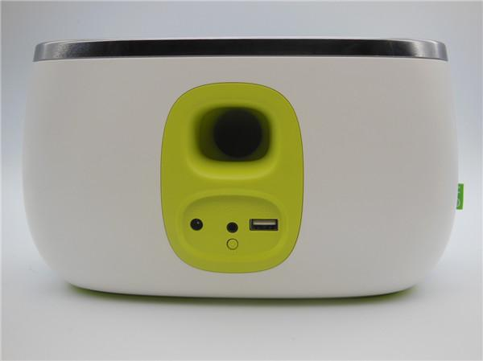
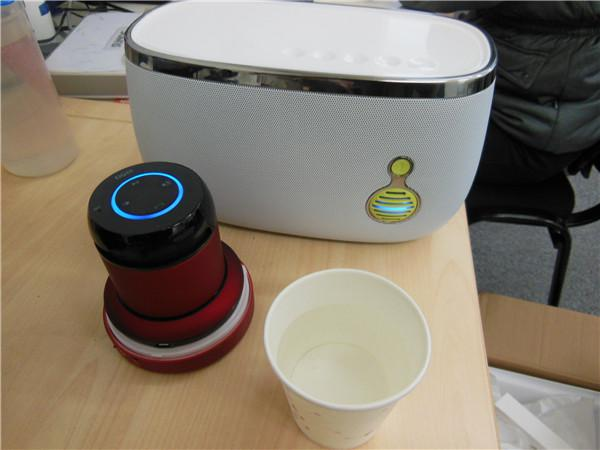

导语：有信息表明，人脑发育90%是在6岁以前完成的，这一阶段是培养宝宝口头表达、图像辨识、逻辑判断等能力的关键时期，为了不输在起跑线上，或者给孩子更为益智的童年生活，家长都在寻求好用的早教机器。当前市面上销售的早教机多了简单的故事机，内容短缺，音质单薄，四位来自音乐互联网企业的奶爸因而创立了比巴科技公司，推出“熏陶早教”理念，而这款比巴早教神器便是此理念的载体。这款神器表面是一个胖胖的音箱，但“大肚子”里却蕴藏了海量的早教素材，本期评测，小编就以身试教，让这“神奇面包”来一次酣畅淋漓的熏陶式教（xi）育（nao）。
长啥样？

比巴早教机采用360°无棱角安全设计，外观犹如一个大面包，因而也被称作“面包音箱”。白色的音箱缀以糖果绿的扬声器和接触口，最上面有五个控制音量和曲目播放的凹形按钮，设计清新可爱，做工精细，手感圆滑，非常讨人喜欢。
怎么用?
当然，“面包”并不仅仅甘于当一个音箱，它还是一个早教神器。而要发挥神器的作用，就必须配合“比巴”APP，或是比巴微信公众号一起使用。比巴APP可以直接在安卓软件市场搜索，或者在产品手册扫描二维码下载。比巴微信可以在微信公众号搜索或在产品手册扫描二维码加入。
比巴APP可以与比巴早教机在局域网内连接，而使用比巴微信号，则可以对比巴早教机进行远程操控。
比巴早教机插好电源后，比巴早教机的显示灯处于红色闪烁状态，这时打开比巴APP进行连接，成功连接后显示灯将处于蓝色常亮状态。
比巴早教机采用声波连接，一次点击即可完成设备网络的设置，即便是家中老人亦可独立顺利完成。打开比巴APP，它就会自动搜索比巴早教机，还会自动搜索手机上的wifi，到时按照提示选择比巴早教机的显示灯状态，并填上wifi密码，把手机放到早教机附近等待就行了。
完成简单的网络设置，就可以马上进入比巴APP首页，尽情选择想要的内容。
使用比巴微信公众号对比巴早教机进行操控比APP更为简单，直接输入微信号“szbeeba”或扫描产品手册上的微信公众号二维码即可。给比巴早教机插上电源后，直接在微信公众号点击“歌曲内容”菜单，剩下的与操作APP无异。
早教内容有什么?
比巴音箱APP的早教频道中拥有丰富的中外名曲和启智故事。其中胎教音乐按月划分，每个月都有专属的音乐，直至生产当月。早教音乐则分为婴儿0-3个月、3-6个月、6-9个月、9-12个月，还有2岁、3岁至6岁几类，分类相当非常细致。比巴内置的早教素材均由专业早教机构打造设定，从音乐菜单上看，0-3个月适合给宝宝播放《小夜曲》、《摇篮曲》等，约1岁时，适合播放的音乐为《甜蜜的21号钢琴协奏曲》等，到了6岁的大孩子，那就该听《骑竹马的骑士》了。
如果不想听音乐，还有唐诗、国学经典和睡前故事可以选择。另外，比巴APP只要联网，就会保持自动更新，基本更新周期为1-2周。
除了内置的早教内容，比巴APP还网罗了时下最热门的豆瓣FM、喜马拉雅、蜻蜓.fm等三个网络电台平台，无论是中学生听英语、社会新鲜人听讲座、老年人听京剧都可以满足。
声音效果如何?
比巴早教机最为精华的就是其附属的比巴APP拥有海量的适合小孩子收听的音乐、故事等内容，而剥开这层外衣，它便还原成一个音质优美的外接音箱。在比巴早教机包装盒上，有一条白色的手机连接线，连上手机和早教机的中间圆形插口，设备上所有的音乐和视频的发音器都可以被它“外包”了。

比巴早教机号称采用专业喇叭厂定制的3inch扬声器，双磁路设计，超低时钟抖动及发烧功放电路，让音质回归本真，母乳音质可呵护宝宝耳膜。
为了测试音箱音质，小编用已使用了一年的阿希莫蓝牙音箱与比巴早教机进行测试比较，评测分为低音、中音、高音三个部分。

低音评测：在音箱的旁边上放一杯水，低音效果好的音箱能够引起水杯的振动，也就是说水杯的水会泛起涟漪，低音效果越好的音箱，其效果越明显，而且时间越长。小编在此环节采用低音歌曲——周杰伦演唱的《青花瓷》作为测试，发现阿希莫引起水杯的涟漪近乎于无，而比巴早教机导致水杯泛起的涟漪比较大。
中音评测：中音对于大多数的音箱产品来说是比较难分辨的部分，而它的主要功能便是产生真实感。小编对中音部分的测试是观看多声道的电影或是纪录片，以纪录片《舌尖上的中国2》作测试，对比发现，阿希莫杂音比较多，背景场景中街市叫卖的嘈杂声音会干扰影响到旁白的声音，而使用比巴早教机，旁白的声音则能凸显出来，背景杂音被柔化。
高音评测：音箱的高音效果一般来说都是非常直观的，例如歌声和一些特殊的电子音效，甚至一些超过听力范围的极端声音。小编以韩红演唱的《青藏高原》来进行高音人声的测试，发现阿希莫的发音更为清亮明晰，比巴早教机的发音较为柔润温和，不过其音量调节更广。这也是比巴所标榜的“母乳音质”，早教机的声音相比传统音箱更为细腻柔和，保护孩童的耳膜不受刺激。
还有哪些特异功能?
一、语音搜索：我的早教机由我操控
比巴早教机的显示灯上面有一个麦克风图形按钮，小朋友按着按钮用普通话说出歌名，就能马上听到自己想听的音乐，这对不会生字的小朋友来说非常省事。
二、联机操控：共享天伦
比巴早教机可以让两台手机同时在线，两台手机连上同一个无线网络和比巴APP，此时一台手机点了一首歌，另一台手机就是马上出现该歌正在播放的状态，用微信公众号也是这样。当妈妈在公司里为孩子点了一首歌，在另一家公司的爸爸马上就可以知道妈妈点的歌，不会错过孩子生活中的点点滴滴。
三、U盘音箱及手机充电器
比巴早教机背后的USB接触口不光能用于手机充电，还可以播放U盘中的海量歌曲。当机器进行了连接，插入U盘，点击APP里的USB设备，机器会播放U盘内的MP3格式内容，随心所欲听自己珍藏的金曲。
小结与建议：
拥有甚至适合胎教的海量早教内容是比巴早教机的一大卖点，但过多的内容有时也会让人无所适从，APP内置音乐方面编排得很好，但对于诗歌、故事和国学经典却并没有更细致分类，如可设置一些针对使用环境的“套餐”，如适合3岁小孩学习的“3岁套餐”，或适合孩子睡前收听的音乐和故事合辑的“晚睡套餐”，并且有一个随着孩子年龄增长而内容也循序渐进的过程，能让父母更易于选择和操作。
作为一台音箱，比巴也有着与蓝牙音箱一样的弊病——容易断线。比巴支持两个版本客户端，或许由于安卓手机版本较多，每种手机的适配有所差异，而iphone客户端在使用中会的比安卓客户端稳定。作为一台智能wifi音响，比巴需要在网络环境下进行使用，若网络不稳定或信号弱会出现断线，小编做评测的过程中就遇到退出比巴APP或者连接APP久了会连不上的情况，经咨询官方客服，如早教机处于蓝色常亮状态而点击音乐无法播放，是因为网络不通畅，而APP闪退的问题则属于公测版APP的bug，厂商将在之后版本中进行优化，用户只要在APP提示升级之后，便能享有更多的功能，甚至每次更新都能获取到新的内容。
另外，据官方资料，比巴早教机是采用国际一线品牌配件，所以其约重2.5kg，比较沉。
比巴早教机虽然有待改善，但其内置的各种具体而专业的早教内容，对于头疼小孩子在成长过程中该学什么的新手父母来说还是非常好用。而且平板电脑泛滥的网络时代，导致现在的小孩子近视问题非常严重，用声音来进行早教，还小孩子一双明亮的眼睛吧!
天猫链接：
http://detail.tmall.com/item.htm?id=43090115348
比巴早教机：
http://www.beeba.cn/product.html